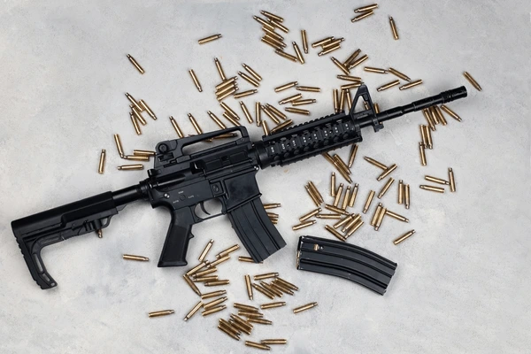

The M4 Carbine is a shorter and lighter variant of the M16A2 assault rifle, designed for high mobility and close-quarters combat. Developed by Colt in the late 1980s, it became the primary infantry weapon for the United States Armed Forces and numerous elite units worldwide. Its modular design allows for extensive customization with various optics, lasers, and accessories, maintaining its status as a benchmark for modern military rifles.
| Feature | Standard M4 |
|---|---|
| Type | Gas-operated, direct impingement select-fire carbine |
| Caliber | 5.56x45mm NATO |
| Capacity | 30 rounds (standard STANAG magazine) |
| Barrel | Length 14.5 inches (368 mm) |
| Weight | ~6.36 lbs (2.88 kg) unloaded |
| Sights | Front post, adjustable rear aperture (often used with optics) |